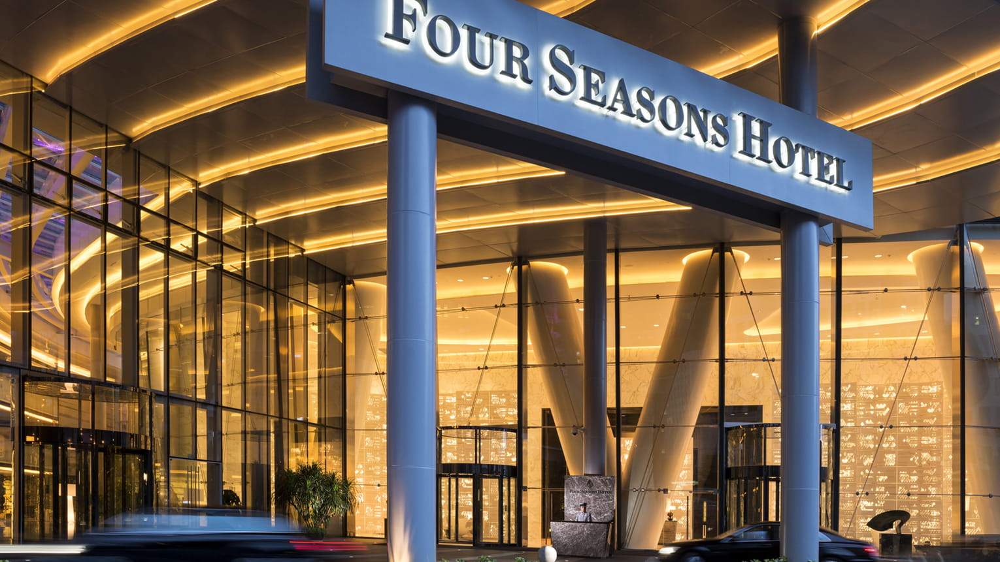

您的美妙之旅由此开始
广州
“广州是一座地处珠江（华南地区母亲河）沿岸的现代化大都会，丰富的多元化使其魅力四射。
这座城市历史文化深远、现代建筑鳞次栉比，人们在此享受丰富的夜生活及幸福的生活体验。”
- 生活时尚杂志编辑 JessieHuang，发表于 lifeofguangzhou.com
广州,作为一个地球上唯一一个两千年长盛不衰的城市，
它没有深圳年轻，没有上海惊艳，没有北京雍容，没有香港繁华,她更像是有着自己孤傲的自尊,不缓不慢 不急不躁地自我发展。
广州就是一座具有浓郁文化底蕴的现代化都市,这里不仅有古色古香的传统岭南建筑也 有充满艺术气息的现代建筑。